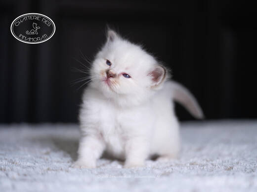
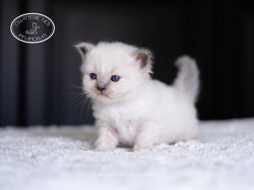
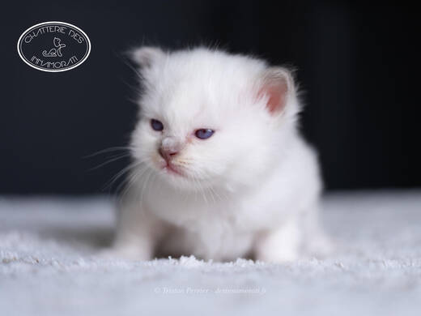
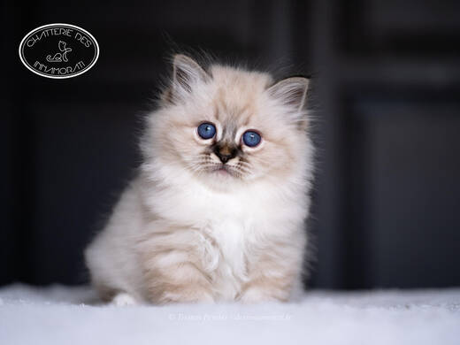

Nos chatons
Les chatons de 2026
Chaque chaton a son album, mis à jour chaque semaine jusqu’à son départ, puis enrichi par les photos de sa famille. Pour réserver, écrivez-nous.
Simone de Beauvoir des Innamorati × Takodana de Luîn Meoî
Nés en mai 2026
Boo des Innamorati
Femelle · chocolat tabby pointPré-réservée
Beetee des Innamorati
Mâle · blue pointRéservé
Bernard des Innamorati
Mâle · lilac pointPré-réservé